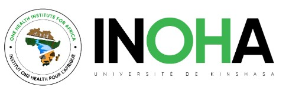

Qu’est-ce que l’INOHA ?
L’Institut One Health pour l’Afrique (INOHA) est une institution de recherche et de formation au sein de la faculté de Médecine de l’Université de Kinshasa (UNIKIN). Sa mission est de promouvoir une approche “Une seule Santé” pour la gestion des problèmes de santé humaine, animale et environnementale en Afrique. L’INOHA utilise les notions d’éco-épidémiologie des maladies infectieuses, de gestion des risques et de catastrophes naturelles.

La création de l’INOHA est l’aboutissement d’un long processus amorcé en 2005, visant à contribuer à la recherche de solutions innovantes pour faire face aux problématiques de santé publique à travers des approches multidisciplinaires, également appelées “Une seule Santé”.
Cette nouvelle institution de recherche, au sein de la faculté de Médecine de l’Université de Kinshasa (UNIKIN), a une vocation internationale. Elle offre des enseignements basés sur des approches systémiques pour lutter contre les problèmes de santé complexes nécessitant des solutions pluridisciplinaires, conformément au concept “Une seule Santé”.
L’Institut One Health pour l’Afrique poursuit plusieurs objectifs regroupés en différents axes :
|
Ces axes visent à améliorer la compréhension, la formation, l’innovation et la surveillance des maladies infectieuses dans une perspective écologique et intégrée.
L’INOHA offre des cours de haute qualité avec un personnel qualifié de divers horizons.
Fonctionnement systémique des maladies infectieuses
Selon le Professeur Didier Bompangue, la maladie ne fonctionne pas de façon isolée dans un système. Dans l’approche écologique la maladie est regardée dans ce continuum. Intégrer les concepts de bases par rapport à l’écologie, énoncer les principaux outils et réunir les éléments nécessaires à la conception d’une étude sur une approche écologique (à travers un exemple concret).
Le constat fait de méner des études pour comprendre l’expression des germes en comprenant les socio-écosystemes de leur émergence et de leur manifestation, a poussé à la naissance de cette nouvelle intstitution de recherche au sein de la faculté de Médecine de l’Université de Kinshasa (UNIKIN) qui a une vocation internationale offrant des enseignements dans le cadre des approches systémiques pour lutter contre les problèmes de santé complèxes qui necessitent des solutions pluridisciplinaires dont le One Health dite “une Seule Santé”, dite INOHA “Institut One Health pour l’Afrique“
“Comprendre l’expression des germes c’est comprendre les socio-écosystemes de leur émergence et de leur manifestation” Prof. Jean-Jacques Muyembe |
La lutte contre les maladies infectieuses passent les études éco-épidémiologiques.
En mars 2024, une nouvelle institution a été lancée, marquant le dixième anniversaire de son prédécesseur, le Master ECOM ALGER (Master en Écologie des Maladies Infectieuses, Gestion du Risque et Aléas Naturels). Ce programme de master était initialement rattaché au Département des Sciences de Base de la Faculté de Médecine de l’Université de Kinshasa.
L’INOHA offre des cours de haute qualité avec un personnel qualifié de divers horizons.
Selon le professeur Didier Bompangue, responsable académique de l’INOHA, les maladies ne fonctionnent pas de manière isolée dans un système. En particulier, les maladies infectieuses doivent être abordées de manière systémique. Dans le cadre de l’approche écologique, la maladie est considérée dans un continuum. Pour lutter contre ces maladies, il est essentiel d’intégrer les concepts écologiques de base, d’énoncer les principaux outils et de réunir les éléments nécessaires à la conception d’une étude basée sur une approche écologique, illustrée par un exemple concret.
Pour tout travail de recherche, l’approche reste la même et comprend :
Une question de recherche
Des hypothèses
Des objectifs
La partie matériels et méthodes
Les résultats et la discussion
Le plan dit “IMRAD” ou “IMRED” demeure crucial d’énoncer le problème et d’utiliser les principaux outils statistiques pour présenter les données de manière structurée. En éco-épidémiologie, cette description de l’état de l’art ne se limite pas à la description des statistiques dans le temps, le lieu et l’espace (approche classique de l’épidémiologie), mais inclut également ce qui se passe avant et après l’événement à étudier ou l’épidémie.
Dr. B_EK
L’approche écologique de l’épidémiologie des maladies infectieuses
La particularité des approches écologiques réside dans l’intégration de toutes les disciplines possibles pour répondre à un problème de santé (approche “One Health” ou “Système Socio-Écologique”). Il ne s’agit pas simplement de juxtaposer différentes disciplines, mais d’organiser toutes ces disciplines autour de la question, avec un chef d’orchestre harmonisant les interventions de chaque discipline.
Les contraintes dans cette entreprise sont multiples, car le monde est très sectorisé et ce statut hybride peut être perçu comme une faiblesse, bien qu’il soit crucial pour la réalisation. Cela exige un travail en équipe interdisciplinaire.
D’où l’Institut One Health pour l’Afrique nait de l’ECOM-ALGER pour permettre d’atteindre les objectifs de cette lutte, regroupés en divers axes que sont :
- La Recherche : Comprendre les complexes socio-écologiques et leurs interactions, ainsi que leur rôle dans l’émergence et la persistance des maladies. Analyser et évaluer les modèles de gouvernance des phénomènes morbides.
- La Formation : Créer des Masters en Écologie et Gouvernance des Maladies Infectieuses à l’Université de Kinshasa, ainsi que d’autres programmes de formation continue et de courte durée.
- L’Accompagnement des innovations opérationnelles : Intégrer les approches éco-épidémiologiques dans les systèmes de surveillance et de lutte contre les maladies infectieuses. Fournir des informations aux décideurs pour ajuster la gouvernance de la santé des socio-écosystèmes.
- L’Observatoire de santé des socio-écosystèmes : Mettre en place des bases de données sur les phénomènes morbides récurrents, diffuser des bulletins d’analyses et des notes d’alerte sur les risques pour la santé des socio-écosystèmes.
Ces axes visent à améliorer la compréhension, la formation, l’innovation et la surveillance des maladies infectieuses dans une perspective écologique et intégrée.
D’autres contraintes sont liées aux difficultés de croisement des données (limites des études). Pour réussir à faire correspondre les données, les règles de collecte et de production doivent être uniformes. L’approche écologique de l’épidémiologie des maladies infectieuses traite les maladies infectieuses comme un phénomène continu organisé dans un systÈme qui doit intégrer divers concepts et outils écologiques pour concevoir des études sur l’incidence et la prévalence des maladies au sein de la population.
En somme, une étude éco-épidémiologique utilise une méthodologie de recherche incluant les étapes classiques de la recherche selon l’IMRAD. Cependant, au-delà des dimensions temporelles (présent), spatiales et géographiques, elle approfondit la notion de temps en y intégrant les dimensions temporelles antérieures et postérieures à l’épidémie, et d’autres dimensions anthropo-zoologiques dans le but de cerner de manière plus global le problème de santé, d’où son caractère multidisciplinaire.
“Nous avons eu l’opportunité de participer dans ces activités étant donné que l’ECOM ALGER actuel INOHA est notre Alma mater dans le monde de rechercheur que nous sommes entrain de réaliser actuellement”.
Dr. B_EK
| Date | Title |
|---|